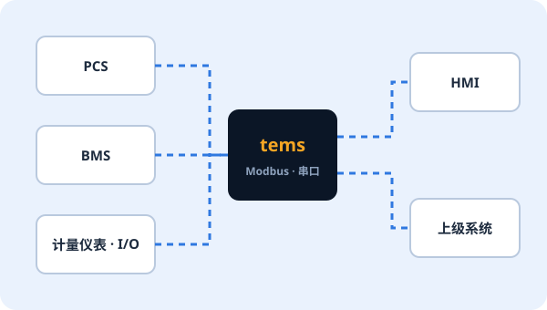
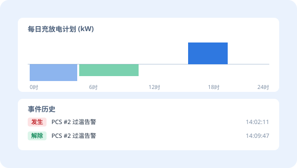
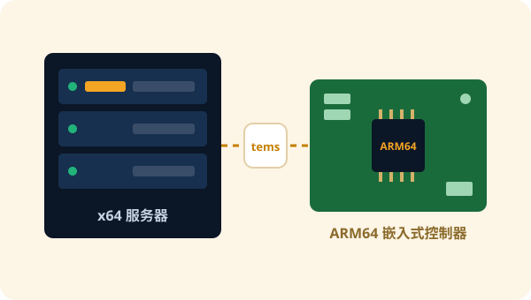

FEATURES
设备控制所需的一切，集于一个引擎
01
与现场设备直接通信
以点位为单位连接 PCS、BMS、计量仪表等现场设备，并像设备一样向上级系统提供数据。
- Modbus 主站 / 从站 (TCP、串口)
- 用配置文件管理设备 · 点位映射
- 对接 GPIO 等控制器输入输出

02
事件 · 历史记录 · 计划任务
完整记录设施中发生的一切，并按设定的时间表运行。
- 记录事件 · 告警的发生与解除
- 保存运行历史，高速写入时序数据库(PostgreSQL)
- 按日的运行计划 · 曲线
- 自动清理 · 备份旧数据

03
模块化进程结构
每个功能作为独立进程运行。只启用现场需要的功能，并且设计上确保一个功能的问题不会波及整个设施控制。
- 每个进程独立的配置文件 · 统一的配置体系
- 按进程启动 · 停止 · 重启
- 通过 NTP 时间同步统一各现场时间
每个现场不同的配置也能轻松实现
根据储能、光伏联动、PCS 控制器等现场特点组合 app 层。
04
从服务器到嵌入式
同一个引擎同时用于 x64 Linux 服务器和 ARM64 嵌入式控制器。PCS 制造商可以将 tems 直接搭载到自家控制器中。
- x64 Linux (Ubuntu) 服务器
- ARM64 嵌入式 Linux 控制器

SPEC
主要规格
| 产品形态 | EMS 服务器平台 / PCS 控制器引擎 (软件) |
|---|---|
| 运行环境 | x64 Linux 服务器、ARM64 嵌入式 Linux |
| 设备通信 | Modbus 主站 · 从站 (TCP、串口)、GPIO |
| 数据 | 事件 · 告警、历史记录、计划任务、资产、时序数据库(PostgreSQL)写入 |
| 结构 | base · core · app 三层模块化进程，每个进程一个配置文件 |
| 运维 | NTP 时间同步、数据清理 · 备份、与 tOps 联动的远程运维 |
详细规格及其他协议支持可根据现场需求协商。
PACKAGE
单独使用，或与 tOps 搭配
仅 tems
- 已有自有运维体系时
- 作为 PCS 制造商的控制器引擎搭载
- 专注于现场设备控制与记录
正在考虑导入 tems 吗?
告诉我们现场配置和对接设备，我们将为您推荐合适的方案。如果您已经在使用 tems，可以用 tdoctor 免费试用版的离线模式立即检查 tems 配置文件夹。